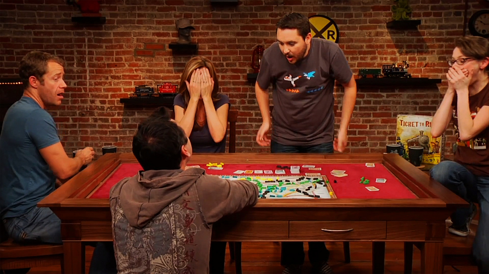

LAUAMÄNGUD

Maailmas pole vist teist samalaadset tegevust, mis paneb ka parimate sõprade vahel aastatepikkuse sõpruse proovile, kui seda on koos lauamängude mängimine. Lauamängude mängimine
arendab sinu loogilist mõtlemist, elavdab kujutlusvõimet ning õpetab sulle, keda tulevikus enam mitte kunagi usaldada või keda endale vajadusel raamatupidajaks palgata. Nii et, kui oled mõnda
aega juba mõnel huvitaval lauamängul silma peal hoidnud, mida pole julgenud osta, või kui sul on kapiotsas eksi poolt kingitud lauamäng, mis veel kilepakendis seisab,
siis pole enam mõtet oodata, vaid laske täringutel veereda.